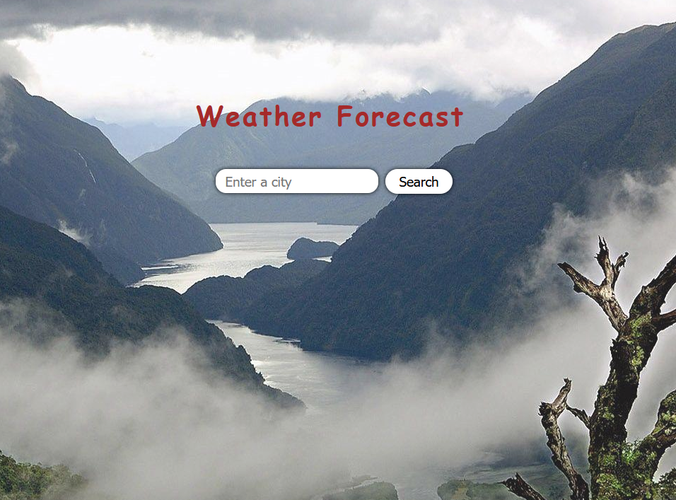
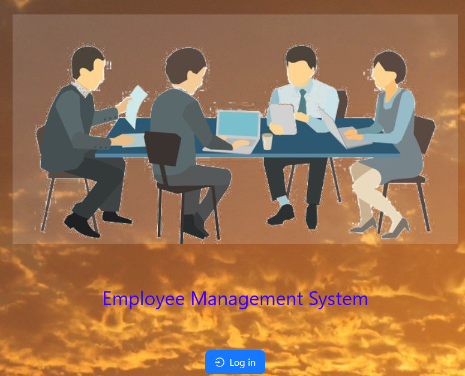

Demo
Developed web-based React Application for displaying weather forecast for the next 5 days with 3-hour steps.
Utilized OpenWeatherMap API to Scrape and process weather data for more than 10000 cities and towns around
the globe, managing more than 400,000 entries.

A Fullstack web-based Employee Management System for displaying and interacting with employee data.
Technologies: React, CSS, JavaScript, HTML, MySQL, Node.js
PSK for All (on-going)
An on-going multi-disciplinary project to address and resolve multiple concerns about Pedestrian Sundays Festivals in Kensington, Toronto.
The current focus is limiting vendors in PSK events.
Send me an email for current status.
A Java Application enables users to efficiently plan and schedule events. It also incorporates a flexible user management system, allowing different groups with varying privileges, and facilitates direct and group messaging capabilities for streamlined communication
Atari's famous game, Centipede, recreated with assembly.